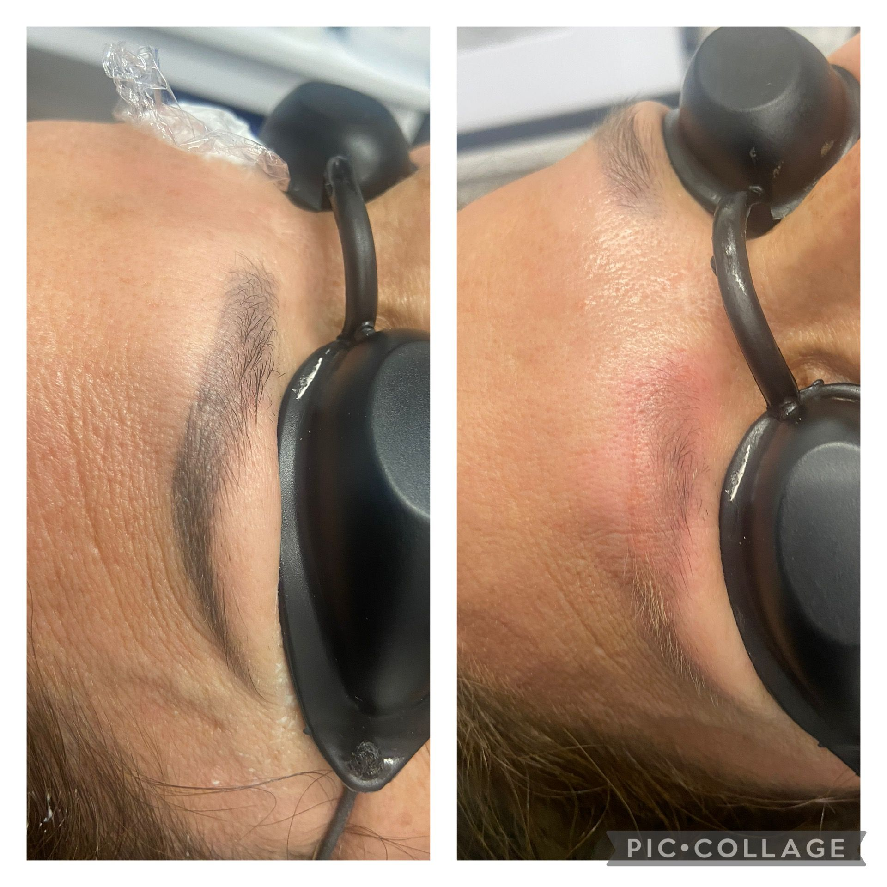

menu
Services > Eyebrows Tattoo Removal

The laser targets the tattoo ink directly, breaking it down into
smaller particles that can then be eliminated by the body’s
natural processes. The result is a gradual fading and eventual
disappearance of the tattoo, without the need for invasive
surgery.
Any laser procedures are performed with the use of special
protective goggles, which both the laser therapist and the
client wear. In the case of eyelid edge tattoo removal, special
protective goggles are put on the eyeball itself so as to
completely cover it, leaving the edge of the eyelid open. It
feels similar to wearing contact lenses for the first time, so
there is no need to fear pain and discomfort.
Laser Eyebrows tattoo removal $180